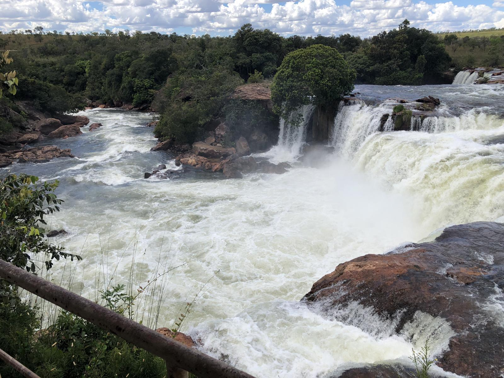

Cachoeira Da Velha
No rio Novo, é a maior cachoeira do parque e uma de suas maiores atrações. Tem grande volume de água cristalina mesmo na época da estiagem – entre maio e setembro - em duas quedas em formato de ferradura com cerca de 100 metros de largura e 15 de queda livre. Olhando de cima e conforme o ângulo, o formato lembra o mapa do Brasil. Conta com uma passarela e um mirante de onde se pode contemplar a cachoeira e a mata ao redor e, dando sorte, um pouco da fauna local. O banho não é permitido por questão de segurança, já que é um grande volume de águas revoltas. O nome, de acordo com os locais, deve-se a uma mulher que vivia nas proximidades da cachoeira e amava demais aquelas águas e, depois de morrer, seu espírito permanece no lugar. Como chegar: Saindo de Palmas até Ponte Alta pelas rodovias TO-50 e TO-255, seguindo depois por estrada de terra.